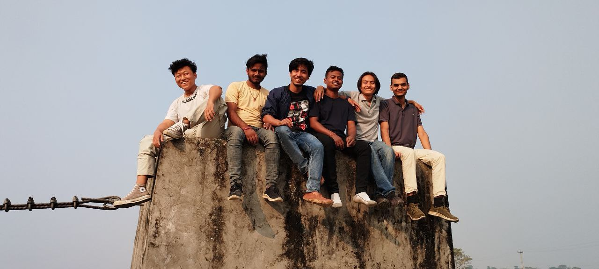

Kalyanpur
By Milan Rai
I am so proud to able to share the story going to the marriage ceremony at (Kalyanpur). We are invited by one of our friend Sandip who is relative, of Nischal our college friend.
in the middle of sunflower field ü§£
Suddenly we made a plan to go at the marriage ceremony with our college friends day before marriage. We made a plan to go through bikes and scooter which is adventurous and fun. At first we talk in our GC(Group Chat) in December 12, then we decided to come college in our dress. From that we will move out at 8 am after talking with our HOD(Head of Department) about the plan. The day has finally come and we met at college and move from college, according to plan.
We make a splits to put our college bags and other accessories at the house, some of the friends went to petrol pump to fill up the tank.
Video of filling up gas
We decided to meet at hatkhola ground and move together from there. Our destination is kalyanpur so we take the shortest route from Rangeli road. The road was so unmanaged and dusty. While going through that Binayak sooty got stuck suddenly due to heavy load or old condition. Different obstacles are there such as road blockage splits of friends, but we enjoyed our journey every second.
at marriage house
bibek vlogs
With all those ups and downs finally we reach at kalyanpur. One of our friend Nischal lead us to his relative’s house. From there we all got fresh and ready to move for the marriage ceremony. Happily, there was Sandip who welcomed us and cheer us for coming. We met different known faces as well from birtanagar, they had also come for attending the ceremony. We greet all the elders one. After some period of time we visited in food session and take the tasty meal. There was a historic tower near that place which was built by village people since long a ago.
The tower was used to guard the place from robbers at first it was built of wood. Due to those historic moments, the villagers decided to build it by proper management. We visit that tower and enjoy certain moment. After that we made a plan to go for suspension bridge near it there we do different funny stuffs.

Finally, we decided to return to our home. We take leave from the ceremony and great thanks Sandip for the invitation. The roads of rangeli were so hazards and unmanaged, so we took the long route from urlabari. We fill up the tank of vechiles and move out from our places. We had a lot of adventurous and fun moments on the roads .The known faces from Biratnagar also join our group during the ride.
Some random videos
Jackie smoking
Bibek hitting 20 clean pushups
climbing the cliff
jackie vlog in english
While returning from there one of our friends Bibek and Kishor got accident, but the accident was not so harsh. Bibek manage to ride and trick traffic police despite the injury. Then after this moment slowly we managed to go our home safely and enjoy and learn something from these journeys.
on our way to returning home
Hope you like this blog
Remember
“The world is a book and those who do not travel read only one page.” - words by Milan Rai
Review appreciated.
Send me your review on FaceBook
Click the below link to subscribe our newsletter to not miss any amazing content.